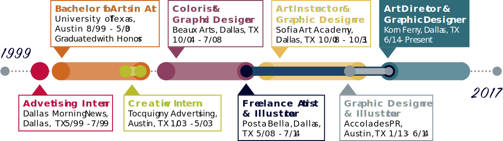

Skills
-

Photoshop
-

Illustrator
-
InDesign
-

Web Design
-

HTML/CSS
-

Dreamweaver
-
Word
-
Powerpoint
-
Excel
-
Prepress
-
Watercolor
-
Art Marker
-

Hand Drawing
-
Illustration
-

Color Theory


Experience & Qualifications
- Worked on campaigns from creative conception through execution.
- Worked with many global brands, such as Burger King/Tim Horton’s, Rolls Royce, Shiseido, and Nespresso.
- Skilled at both digital and hand-drawn illustration.
- Strong conceptual and design skills in print and digital media, as well as video and experiential marketing.
- Working within established brand guidelines as well as developing new branding, including logo design and color palettes.
- Significant experience creating infographics, data visualization, and process visualization.
- Ability to meet deadlines and objectives with very little direction or supervision.
- Excellent communication skills both written and verbal.
- Works well independently or collaboratively as part of a team.

